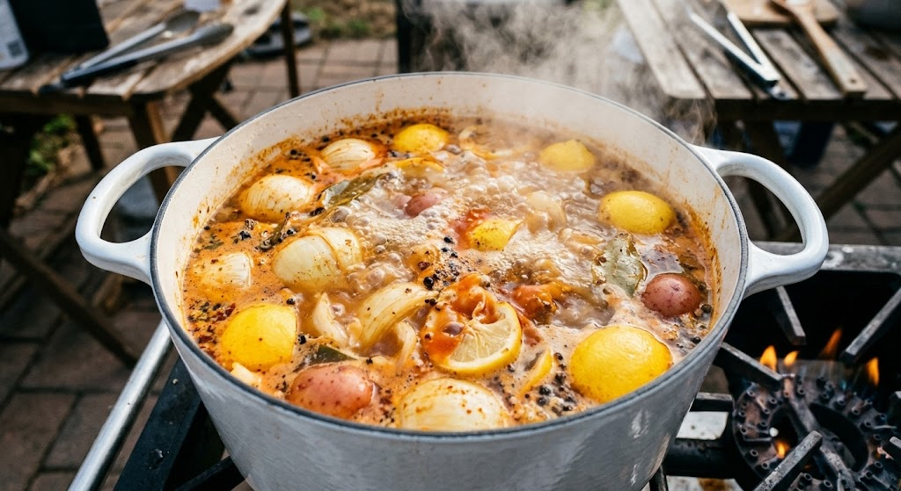
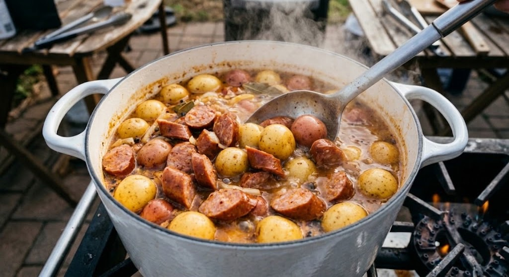
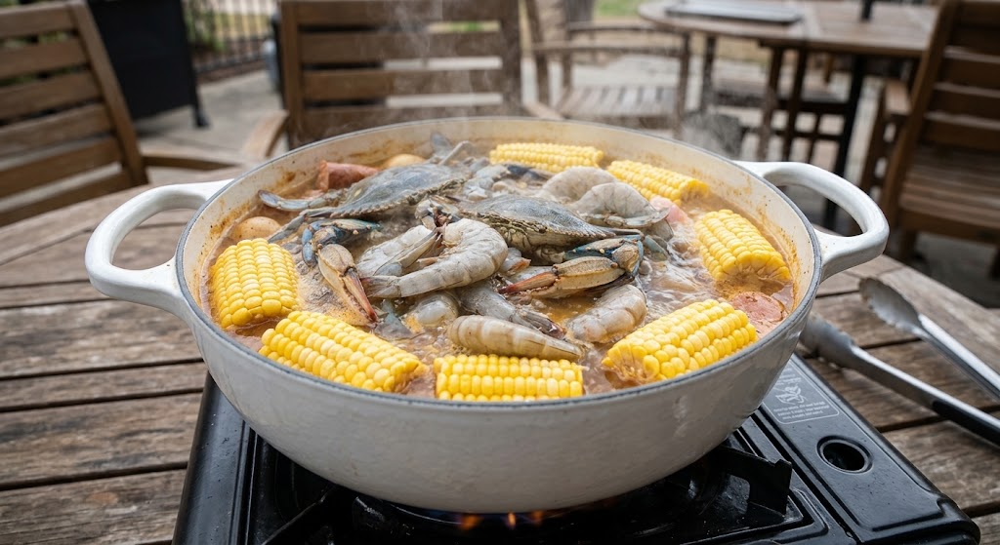
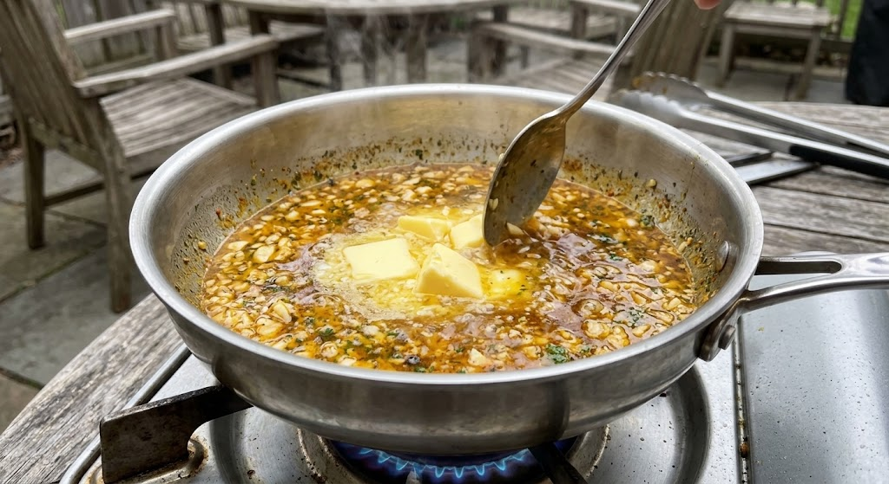
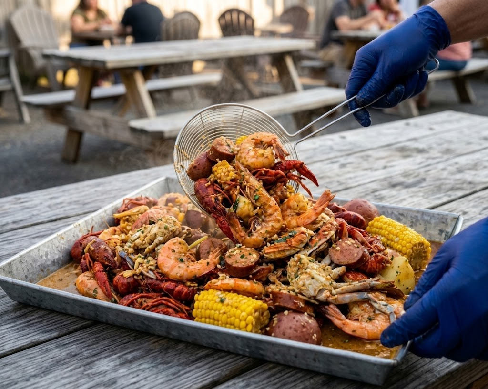
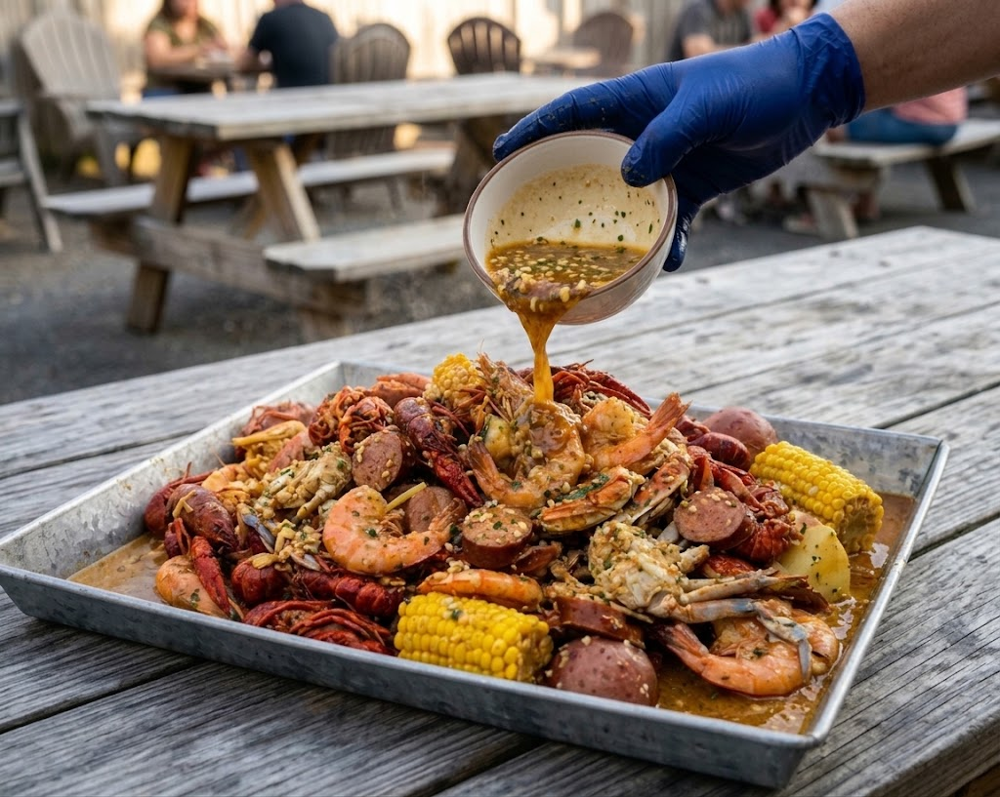

Ready to make some magic happen in the kitchen? Making this at home will save you at least half of the cost of going out to eat. With Cajun crawfish running around $14-16 per pound at restaurants around the Austin Texas area, this recipe will save you a ton of money while still giving you the same flavor and experience.
This recipe rooted in Louisiana tradition with an awesome Vietnamese-American twist, this Cajun Seafood Boil with Garlic Butter Sauce is hands down the best you'll ever make. It's packed with juicy shrimp, crab, sausage, and corn, then completely drenched in a rich, garlic butter sauce that is out of this world. ...Slurp...Finger-licking-good! Put your apron on and let's get into this recipe!

Photo Source: britneybreaksbread
Ingredients
Ingredients for the cajun seafood boil:
- 3 tablespoons Creole cajune seasoning
- 1 tablespoon Old bay seasoning
- 1 medium yellow onion, sliced into half-mooons
- 1 large lemon, cut into wedges
- Hot sauce (optional)
- 1 pound of smoked sausage, cut into 1-inch pieces
- 4-6 ears of sweet corn on the cob
- 1 pound of baby yukon gold or red potatoes
- 2 pounds of seafood of your choice (Crawfish, crab, mussels, clams and maybe some lobster tails!)
- Use an extra large stock pot to boil the seafood in.
Ingredients for the garlic butter sauce:
- 2 sticks unsalted butter
- 30g minced garlic
- 2 tablespoons lemon juice
- 1 tablespoon old bay seasoning
- 1 tablespoon fresh chopped parsley
- 1-2 tablespoons fish sauce
- 1 teaspoon brown sugar or honey
- 1 teaspoon smoked paprika
- Salt and pepper to taste
Instructions
Fire up the boil.

Photo Source: Gemini
Grab an extra-large stockpot or Dutch oven (around 10 quarts or bigger) and heat your water and beer over medium-high until it's rolling. Toss in your Creole Cajun seasoning, Old Bay, a few dashes of hot sauce, sliced onions, and lemon wedges. Give it all a really good stir, then let it simmer and build that incredible deep flavor for about 15 minutes.Add the sausage & potatoes.

Add the seafood & corn.

Make the garlic butter sauce.

Assemble and smother.

Once the seafood is cooked

Serve seafood boil.

Photo Source: butterbeready
Serve it hot and messy straight off the baking sheet, grab a lemon wedge, and dive right into the absolute best Viet-Cajun seafood boil of your life!
Photo Source: Gemini
Drop in the sausage and baby potatoes, stir well, and let them boil for 15-20 minutes until fork-tender.Photo Source: Gemini
Nestle in the crab, shrimp, and corn, making sure everything is submerged, and boil for 5-7 minutes until the shrimp turns pink.Photo Source: Gemini
Melt the butter in a saucepan over medium heat with garlic, lemon juice, Old Bay, parsley, Cajun seasoning, paprika, fish sauce and brown sugar. Simmer for 5-7 minutes until well combined.Photo Source: Gemini
Line a big baking sheet with foil or parchment paper. Use a spider strainer to pull out all the seafood, sausage, potatoes, and corn, leaving the onion and lemon bits behind. Slurp! Pour that epic, lemongrass-infused Viet-Cajun garlic butter sauce all over the top. Put your apron on, throw on some gloves, and toss everything together until it's completely smothered and ready to devour.Photo Source: Gemini
Drain the pot and transfer everything to a large serving platter or tray. Pour the garlic butter sauce over the top of the seafood boil.